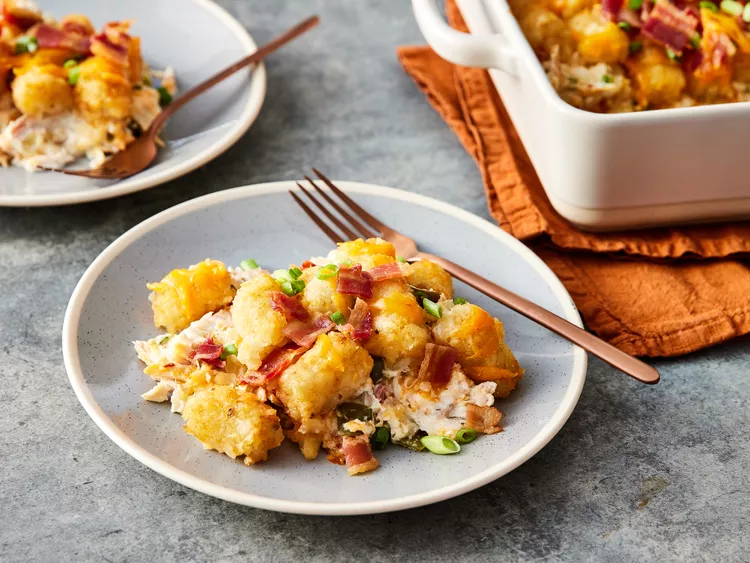

Jalapeno Popper Chicken Casserole

Description
With this jalapeno popper chicken casserole you will have all the flavors of a jalapeno popper but in a complete dish. Think bacon, cheese, jalapenos in a creamy, cheesy casserole—what's not to love?
Ingredients
- 6 ounces cream cheese, softened
- 3/4 cup sour cream
- 3/4 cup milk
- 3 1/2 to 4 cups shredded cooked chicken (from 1 purchased roasted chicken)
- 1 1/2 cups shredded mild Cheddar cheese, divided
- 6 jalapeno peppers, seeded and chopped
- 4 green onions, sliced, divided
- 1/2 pound bacon, crisp cooked, divided (about 8 slices)
- 1 teaspoon garlic powder
- 1 teaspoon onion powder
- 1/2 (32-ounce bag) frozen fried potato nuggets
Steps
- Gather all ingredients.
- Preheat the oven to 400 degrees F (200 degrees C). Stir together cream cheese, sour cream and milk in a 2- quart baking dish until combined. Add chicken, 1 cup Cheddar cheese, jalapeños, 1/2 of the green onions, 1/2 of the bacon, garlic powder, and onion powder. Stir to combine.
- Spread mixture evenly in the baking dish.
- Arrange potato nuggets on top in one layer.
- Bake, uncovered, until potatoes are golden, about 35 minutes. Sprinkle with remaining 1/2 cup cheese and bacon. Tent with foil and let stand for 5 minutes. before serving.
- Sprinkle with remaining green onions before serving.